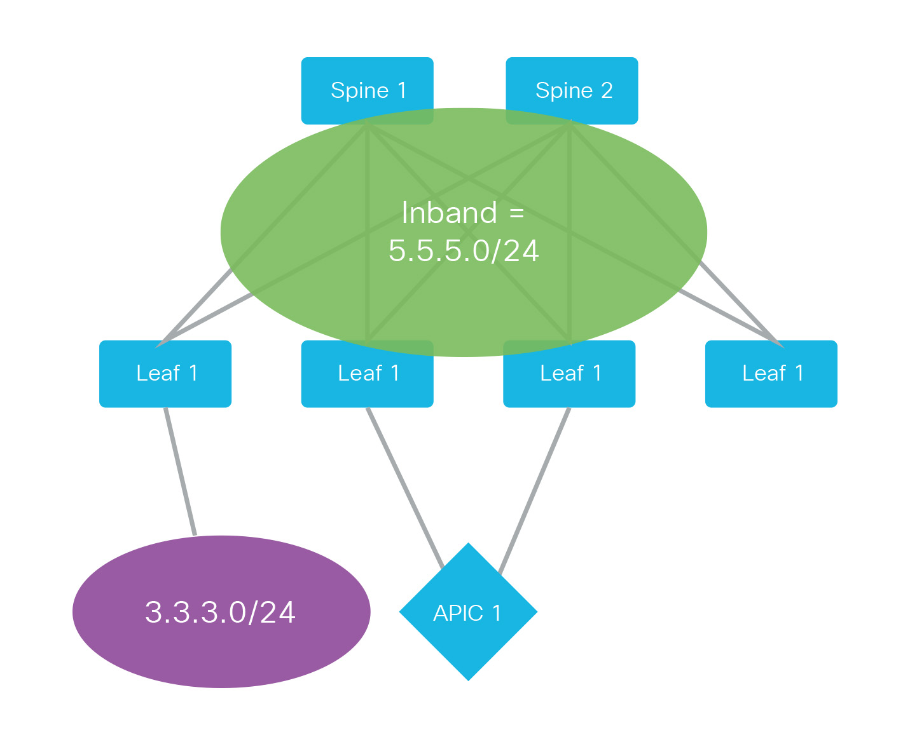
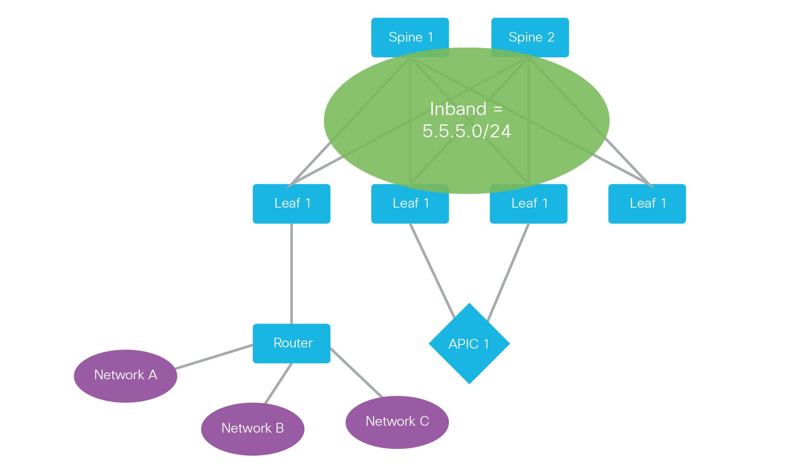
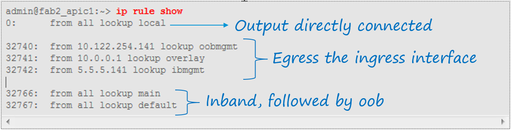
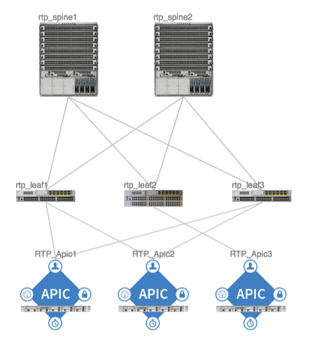

Management Tenant¶
Overview¶
The management tenant is a pre-defined tenant in the ACI policy model that addresses policies related to inband and out of band management connectivity of the ACI Fabric.
This chapter presents an overview of how the management tenant functions, the verification steps used to confirm a working out-of-band management configuration for the example reference topology, and potential issues that relate to the management tenant. The displays taken on a working fabric can then be used as a reference resource to aid in troubleshooting issues with the management tenant functions.
The example reference topology that is used only has out-of-band management configured, so in order to show any inband management functions, all inband management information shown in this book will be captured from another fabric.
Fabric Management Routing¶
The ACI fabric provides both in-band and out-of-band management access options. The following paragraphs will describe the internal system behavior, including routing and failover for the APIC and fabric nodes (switches).
Out-Of-Band Management¶
Out-of-band (OOB) management provides management communications through configuration of dedicated physical interfaces on the APICs and fabric nodes (switches). The initial APIC setup script prompts to configure the OOB management IP address by a series of configuration prompts:
Out-of-band management configuration ...
Enter the IP address for out-of-band management: 10.122.254.141/24
Enter the IP address of the default gateway [None]: 10.122.254.1
Enter the interface speed/duplex mode [auto]:
Once the fabric is initialized and discovered, the OOB addresses can be configured for the fabric nodes (switches) through any of the object model interfaces (GUI, API, CLI).
On the APIC, the OOB configuration creates an interface called oobmgmt. Keep in mind throughout this book that when viewing configuration information on an APIC, the APIC is built on a Linux host operating system, and some of the abbreviated information might be more systems related than traditional Cisco NXOS/IOS command or output structure related. As an example, to view the interface oobmgmt configuration, connect to the APIC CLI, enter the command ip add show dev oobmgmt. The dev keyword is more of a Linux context moniker for “device” and the order of the command is different from a traditional Cisco show command. Below is the output produced from the ip add show dev oobmgmt command:
admin@RTP_Apic2:~> ip add show dev oobmgmt
8: oobmgmt: <BROADCAST,MULTICAST,UP,LOWER_UP> mtu 1500 qdisc noqueue state UP
link/ether 24:e9:b3:15:dd:60 brd ff:ff:ff:ff:ff:ff
inet 10.122.254.212/24 brd 10.122.254.255 scope global oobmgmt
inet6 fe80::26e9:b3ff:fe15:dd60/64 scope link
valid_lft forever preferred_lft forever
admin@RTP_Apic2:~>
On the fabric nodes (switches), the OOB configuration is applied to the management interface eth0 (aka mgmt0). To view the eth0 interface configuration, connect to the node CLI, enter the following command and observe the produced output:
rtp_leaf1# ip add show dev eth0
2: eth0: <BROADCAST,MULTICAST,UP,LOWER_UP> mtu 1500 qdisc mq state UP qlen 1000
link/ether 88:f0:31:db:e7:f0 brd ff:ff:ff:ff:ff:ff
inet 10.122.254.241/24 brd 10.122.254.255 scope global eth0
inet6 fe80::8af0:31ff:fedb:e7f0/64 scope link
valid_lft forever preferred_lft forever
rtp_leaf1#
Inband Management¶
Inband management provides management communications through configuration of one or more front-panel (data plane) ports on the fabric leaf nodes (switches). Inband management requires a dedicated pool of IP addresses that do not directly extend outside the fabric. Inband management can be configured in two modes: Layer 2 and Layer 3.
Layer 2 Inband Management¶
With Layer 2 inband management, the inband management addresses assigned to the APICs and fabric nodes (switches) are only accessible from networks directly connected to the leaf nodes.
{kind=link}
In this model, the fabric inband addresses are not accessible from networks not directly connected to the fabric.
Layer 2 Configuration Notes¶
A minimum of 2 VLANs are required
- 1 for the Inband management EPG
- 1 for the application EPG mapped to the leaf port providing connectivity outside the fabric
- Configuring a second Bridge Domain (BD) for the application EPG is optional and it is also valid to map the application EPG to the default BD named ‘inb’
- The subnet gateway(s) configured for the BD’s are used as next-hop addresses and should be unique host addresses
Layer 3¶
With Layer 3 inband management, the inband management addresses assigned to the APICs and fabric nodes are accessible by remote networks by virtue of configuring a L3 Routed Outside network object.
{kind=link}
Layer 3 Inband Configuration Notes¶
- A minimum of 2 VLANs are required
- 1 for the Inband EPG
- 1 for the application EPG mapped to the leaf port providing access outside the fabric
- Configuring a second BD for the application EPG is optional - it is also valid to map the application EPG to the default ‘inb’ BD
- The subnet gateway(s) configured for the BD’s are used as next-hop addresses and should be unique (i.e. unused) host addresses
Regardless of whether using L2 or L3, the encapsulation VLAN used for the Inband EPG is used to create a sub-interface on the APIC using the name format bond0.<vlan>, where <vlan> is the VLAN configured as the encapsulation for the Inband EPG. As an example, the following is the output from the APIC CLI show command:
admin@fab2_apic1:~> ip add show bond0.10
116: bond0.10@bond0: <BROADCAST,MULTICAST,UP,LOWER_UP> mtu 1496 qdisc noqueue state UP
link/ether 64:12:25:a7:df:3f brd ff:ff:ff:ff:ff:ff
inet 5.5.5.141/24 brd 5.5.5.255 scope global bond0.10
inet6 fe80::6612:25ff:fea7:df3f/64 scope link
valid_lft forever preferred_lft forever
On the fabric nodes, inband interfaces are created as part of the mgmt:inb VRF:
fab2_leaf4# show ip int vrf mgmt:inb
IP Interface Status for VRF "mgmt:inb"
vlan27, Interface status: protocol-up/link-up/admin-up, iod: 128,
IP address: 5.5.5.1, IP subnet: 5.5.5.0/24 <<<<<<<<<<<<<<< BD gateway address
IP address: 5.5.5.137, IP subnet: 5.5.5.137/32 secondary
IP broadcast address: 255.255.255.255
IP primary address route-preference: 1, tag: 0
In the output above, the gateway address(es) for the BD is also configured on the same interface. This is true for all leaf nodes (switches) that are configured for inband.
APIC Management Routing¶
The APIC internal networking configuration utilizes the Linux iproute2 utilities, which provides a combination of routing policy database and multiple routing tables used to implement routing on the controllers. When both inband and out-of-band management are configured, the APIC uses the following forwarding logic:
- Packets that come in an interface, go out that same interface
- Packets sourced from the APIC, destined to a directly connected network, go out the directly connected interface
- Packets sourced from the APIC, destined to a remote network, prefer inband, followed by out-of-band
An APIC controller always prefers the in-band management interface to the out-of-band management interface as long as in-band is available. This behavior cannot be changed with configuration. APIC controllers should have two ways to reach a single management network with inband being the primary path and out-of-band being the backup path.
To view the configured routing tables on the APIC, execute the following command cat /etc/iproute2/rt_tables:
admin@fab2_apic1:~> cat /etc/iproute2/rt_tables
#
# reserved values
#
255 local
254 main
253 default
0 unspec
#
# local
#
#1 inr.ruhep
1 overlay
2 oobmgmt
admin@fab2_apic1:~>
The local and main routing tables are Linux defaults. The local routing table is populated with information from all of the interfaces configured with IP addresses on the APIC. Theoverlay, oobmgmt, and ibmgmt routing tables are APIC-specific and are populated with the relevant routes for each network. The entries from the 3 APIC-specific routing tables are used to populate the main routing table. The contents of each routing table can be viewed by using the command ip route show <table>. For example:
admin@fab2_apic1:~> ip route show table oobmgmt
default via 10.122.254.1 dev oobmgmt src 10.122.254.141
10.122.254.1 dev oobmgmt scope link src 10.122.254.141
169.254.254.0/24 dev lxcbr0 scope link
admin@fab2_apic1:~>
The decision of which routing table is used for the lookup is based on an ordered list of rules in the routing policy database. Use ip rule show command to view the the routing policy database:
{kind=link}
The main routing table used for packets originating from the APIC, shows 2 default routes:
admin@fab2_apic1:~> ip route show
default via 10.122.254.1 dev oobmgmt metric 16
10.0.0.0/16 via 10.0.0.30 dev bond0.4093 src 10.0.0.1
10.0.0.30 dev bond0.4093 scope link src 10.0.0.1
10.122.254.0/24 dev oobmgmt proto kernel scope link src 10.122.254.141
10.122.254.1 dev oobmgmt scope link src 10.122.254.141
169.254.1.0/24 dev teplo-1 proto kernel scope link src 169.254.1.1
169.254.254.0/24 dev lxcbr0 proto kernel scope link src 169.254.254.254
admin@fab2_apic1:~>
The metric 16 on the default route out the oobmgmt interface is what makes the default route via inband (bond0.10) preferable.
Fabric Node (Switch) Routing¶
Routing on the fabric nodes (switches) is split between Linux and NX-OS. Unlike the APIC configuration, the routing table segregation on the fabric nodes is implemented using multiple VRF instances. The configured VRFs on a fabric node can be viewed by using the show vrf command:
fab2_leaf1# show vrf
VRF-Name VRF-ID State Reason
black-hole 3 Up --
management 2 Up --
mgmt:inb 11 Up --
overlay-1 9 Up --
Although the management VRF exists in the above output, the associated routing table is empty. This is because the management VRF mapped to the out-of-band network configuration, is handled by Linux. This means that on the fabric nodes, the Linux configuration does not use multiple routing tables and the content of the main routing table is only populated by the out-of-band network configuration.
To view the contents of each VRF routing table in NX-OS, use the show ip route vrf <vrf> command. For example:
fab2_leaf1# show ip route vrf mgmt:inb
IP Route Table for VRF "mgmt:inb"
'*' denotes best ucast next-hop
'**' denotes best mcast next-hop
'[x/y]' denotes [preference/metric]
'%<string>' in via output denotes VRF <string>
3.3.3.0/24, ubest/mbest: 1/0, attached, direct, pervasive
*via 10.0.224.65%overlay-1, [1/0], 02:31:46, static
3.3.3.1/32, ubest/mbest: 1/0, attached
*via 3.3.3.1, Vlan47, [1/0], 02:31:46, local
5.5.5.0/24, ubest/mbest: 1/0, attached, direct, pervasive
*via 10.0.224.65%overlay-1, [1/0], 07:48:24, static
5.5.5.1/32, ubest/mbest: 1/0, attached
*via 5.5.5.1, Vlan40, [1/0], 07:48:24, local
5.5.5.134/32, ubest/mbest: 1/0, attached
Management Failover¶
In theory the out-of-band network functions as a backup when inband management connectivity is unavailable on the APIC. However, APIC has does not run any routing protocol and so will not be able to intelligently fallback to use OOB interface in case of any upstream connectivity issues over inband. The inband management network on APIC changes in the following scenarios:
- The bond0 interface on the APIC goes down
- The encapsulation configuration on the Inband EPG is removed
Note
Note that the above failover behavior is specific to APIC and the same failover behavior is unavailable on the fabric switches due to the switches inband and OOB interface belong to two different VRFs.
Management EPG Configuration¶
Some of the fabric services, such as NTP, DNS, etc., provide the option to configure a Management EPG attribute. This specifies whether inband or out-of-band is used for communication by these services. This setting only affects the behavior of the fabric nodes, not the APICs. With the exception of the VM Provider configuration, the APIC follows the forwarding logic described in the APIC Management Routing section earlier in this chapter. The VM Provider configuration has an optional Management EPG setting, but only able to select an EPG tied to the In-Band Management EPG.
Fabric Verification¶
In the following section, displays are collected from the reference topology to show a working fabric configuration. This verification is only for out-of-band management.
{kind=link}
Out of Band Verification¶
The first step is to verify the configuration of the oobmgmt interface on the APIC using the command ip addr show dev oobmgmt on all three APIC’s. The interfaces need to be in the up state and the expected IP addresses need to be assigned with the proper masks. To connect to the various fabric nodes, there are several options but if once logged into at least one of the APIC’s use the output of show fabric membership to see which node-names and VTEP IP addresses can be used to connect via SSH in order to verify operations.
Verification of the oobmgmt interface address assignment and interface status on RTP_Apic1:
admin@RTP_Apic1:~> ip addr show dev oobmgmt
8: oobmgmt: <BROADCAST,MULTICAST,UP,LOWER_UP> mtu 1500 qdisc noqueue state UP
link/ether 24:e9:b3:15:a0:ee brd ff:ff:ff:ff:ff:ff
inet 10.122.254.211/24 brd 10.122.254.255 scope global oobmgmt
inet6 fe80::26e9:b3ff:fe15:a0ee/64 scope link
valid_lft forever preferred_lft forever
Verification of the oobmgmt interface address assignment and interface status on RTP_Apic2:
admin@RTP_Apic2:~> ip addr show dev oobmgmt
8: oobmgmt: <BROADCAST,MULTICAST,UP,LOWER_UP> mtu 1500 qdisc noqueue state UP
link/ether 24:e9:b3:15:dd:60 brd ff:ff:ff:ff:ff:ff
inet 10.122.254.212/24 brd 10.122.254.255 scope global oobmgmt
inet6 fe80::26e9:b3ff:fe15:dd60/64 scope link
valid_lft forever preferred_lft forever
admin@RTP_Apic2:~>
Verification of the oobmgmt interface address assignment and interface status on RTP_Apic3:
admin@RTP_Apic3:~> ip addr show dev oobmgmt
8: oobmgmt: <BROADCAST,MULTICAST,UP,LOWER_UP> mtu 1500 qdisc noqueue state UP
link/ether 18:e7:28:2e:17:de brd ff:ff:ff:ff:ff:ff
inet 10.122.254.213/24 brd 10.122.254.255 scope global oobmgmt
inet6 fe80::1ae7:28ff:fe2e:17de/64 scope link
valid_lft forever preferred_lft forever
admin@RTP_Apic3:~>
Verification of the fabric node membership and their respective TEP address assignment as seen from RTP_Apic2 (would be the same on all controllers under in a normal state):
admin@RTP_Apic2:~> show fabric membership
# Executing command: cat /aci/fabric/inventory/fabric-membership/clients/summary
clients:
serial-number node-id node-name model role ip decomissioned supported-model
------------- ------- ---------- ------------ ----- ---------------- ------------- ---------------
SAL1819SAN6 101 rtp_leaf1 N9K-C9396PX leaf 172.16.136.95/32 no yes
SAL172682S0 102 rtp_leaf2 N9K-C93128TX leaf 172.16.136.91/32 no yes
SAL1802KLJF 103 rtp_leaf3 N9K-C9396PX leaf 172.16.136.92/32 no yes
FGE173400H2 201 rtp_spine1 N9K-C9508 spine 172.16.136.93/32 no yes
FGE173400H7 202 rtp_spine2 N9K-C9508 spine 172.16.136.94/32 no yes
admin@RTP_Apic2:~>
To verify the OOB mgmt on the fabric switch, use the attach command on the APIC to connect to a fabric switch via the VTEP address, then execute the ip addr show dev eth0 command for each switch, and again ensure that the interface state is UP, the ip address and netmask are correct, etc:
Verification of the OOB management interface (eth0) on fabric node rtp_leaf1:
rtp_leaf1# ip addr show dev eth0
2: eth0: <BROADCAST,MULTICAST,UP,LOWER_UP> mtu 1500 qdisc mq state UP qlen 1000
link/ether 88:f0:31:db:e7:f0 brd ff:ff:ff:ff:ff:ff
inet 10.122.254.241/24 brd 10.122.254.255 scope global eth0
inet6 fe80::8af0:31ff:fedb:e7f0/64 scope link
valid_lft forever preferred_lft forever
rtp_leaf1#
Verification of the OOB management interface (eth0) on fabric node rtp_leaf2:
rtp_leaf2# ip addr show dev eth0
2: eth0: <BROADCAST,MULTICAST,UP,LOWER_UP> mtu 1500 qdisc mq state UP qlen 1000
link/ether 00:22:bd:f8:34:c0 brd ff:ff:ff:ff:ff:ff
inet 10.122.254.242/24 brd 10.122.254.255 scope global eth0
inet6 fe80::222:bdff:fef8:34c0/64 scope link
valid_lft forever preferred_lft forever
rtp_leaf2#
Verification of the OOB management interface (eth0) on fabric node rtp_leaf3:
rtp_leaf3# ip addr show dev eth0
2: eth0: <BROADCAST,MULTICAST,UP,LOWER_UP> mtu 1500 qdisc mq state UP qlen 1000
link/ether 7c:69:f6:10:6d:18 brd ff:ff:ff:ff:ff:ff
inet 10.122.254.243/24 brd 10.122.254.255 scope global eth0
inet6 fe80::7e69:f6ff:fe10:6d18/64 scope link
valid_lft forever preferred_lft forever
rtp_leaf3#
When looking at the spine, the command used is show interface mgmt0 to ensure the proper ip address and netmask is assigned. Verification of the OOB management interface on rtp_spine1:
rtp_spine1# show int mgmt0
mgmt0 is up
admin state is up,
Hardware: GigabitEthernet, address: 0022.bdfb.f256 (bia 0022.bdfb.f256)
Internet Address is 10.122.254.244/24
MTU 9000 bytes, BW 1000000 Kbit, DLY 10 usec
reliability 255/255, txload 1/255, rxload 1/255
Encapsulation ARPA, medium is broadcast
Port mode is routed
full-duplex, 1000 Mb/s
Beacon is turned off
Auto-Negotiation is turned on
Input flow-control is off, output flow-control is off
Auto-mdix is turned off
EtherType is 0x0000
1 minute input rate 0 bits/sec, 0 packets/sec
1 minute output rate 0 bits/sec, 0 packets/sec
Rx
256791 input packets 521 unicast packets 5228 multicast packets
251042 broadcast packets 26081550 bytes
Tx
679 output packets 456 unicast packets 217 multicast packets
6 broadcast packets 71294 bytes
rtp_spine1#
To verify that the spine has the proper default gateway configuration, use the command ip route show as seen here for rtp_spine1:
rtp_spine1# ip route show
default via 10.122.254.1 dev eth6
10.122.254.0/24 dev eth6 proto kernel scope link src 10.122.254.244
127.1.0.0/16 dev psdev0 proto kernel scope link src 127.1.1.27
rtp_spine1#
The same validation for rtp_spine2 looks similar to spine1 as shown:
rtp_spine2# show int mgmt0
mgmt0 is up
admin state is up,
Hardware: GigabitEthernet, address: 0022.bdfb.fa00 (bia 0022.bdfb.fa00)
Internet Address is 10.122.254.245/24
MTU 9000 bytes, BW 1000000 Kbit, DLY 10 usec
reliability 255/255, txload 1/255, rxload 1/255
Encapsulation ARPA, medium is broadcast
Port mode is routed
full-duplex, 1000 Mb/s
Beacon is turned off
Auto-Negotiation is turned on
Input flow-control is off, output flow-control is off
Auto-mdix is turned off
EtherType is 0x0000
1 minute input rate 0 bits/sec, 0 packets/sec
1 minute output rate 0 bits/sec, 0 packets/sec
Rx
256216 input packets 345 unicast packets 5218 multicast packets
250653 broadcast packets 26007756 bytes
Tx
542 output packets 312 unicast packets 225 multicast packets
5 broadcast packets 59946 bytes
rtp_spine2#
And to see the routing table:
rtp_spine2# ip route show
default via 10.122.254.1 dev eth6
10.122.254.0/24 dev eth6 proto kernel scope link src 10.122.254.245
127.1.0.0/16 dev psdev0 proto kernel scope link src 127.1.1.27
rtp_spine2#
To verify APIC routing use the command cat /etc/iproute2/rt_tables:
admin@RTP_Apic1:~> cat /etc/iproute2/rt_tables
#
# reserved values
#
255 local
254 main
253 default
0 unspec
#
# local
#
#1 inr.ruhep
2 oobmgmt
1 overlay
admin@RTP_Apic1:~>
The output of the ip route show tells us that there are two routing tables on our sample reference topology, one for out-of-band management and one for the overlay.
The next output to verify is the out-of-band management routing table entries using the command ip route show table oobmgmt . There should be a default route pointed at the default gateway IP address and out-of-band management interface (dev oobmgmt) with a source IP address that matches the IP address of the out-of-band management interface.
admin@RTP_Apic1:~> ip route show table oobmgmt
default via 10.122.254.1 dev oobmgmt src 10.122.254.211
10.122.254.0/24 dev oobmgmt scope link
169.254.254.0/24 dev lxcbr0 scope link
admin@RTP_Apic1:~>
The next output to verify is the output of ip rule show which shows how the APIC chooses which routing table is used for the lookup:
admin@RTP_Apic1:~> ip rule show
0: from all lookup local
32762: from 10.122.254.211 lookup oobmgmt
32763: from 172.16.0.1 lookup overlay
32764: from 172.16.0.1 lookup overlay
32765: from 10.122.254.211 lookup oobmgmt
32766: from all lookup main
32767: from all lookup default
admin@RTP_Apic1:~>
Finally the ip route show command will show how the global routing table is configured on an APIC for out-of-band management. The oobmgmt metric is 16 which has no impact on this situation but if an inband management configuration was applied, the inband would not have a metric and would have a preference over the out-of-band management route.
admin@RTP_Apic3:~> ip route show
default via 10.122.254.1 dev oobmgmt metric 16
10.122.254.0/24 dev oobmgmt proto kernel scope link src 10.122.254.213
169.254.1.0/24 dev teplo-1 proto kernel scope link src 169.254.1.1
169.254.254.0/24 dev lxcbr0 proto kernel scope link src 169.254.254.254
172.16.0.0/16 via 172.16.0.30 dev bond0.3500 src 172.16.0.3
172.16.0.30 dev bond0.3500 scope link src 172.16.0.3
admin@RTP_Apic3:~>
To ensure that the VRF is configured for the fabric nodes, verify with the output of show vrf.
rtp_leaf1# show vrf
VRF-Name VRF-ID State Reason
black-hole 3 Up --
management 2 Up --
overlay-1 4 Up --
rtp_leaf1#
Problem Description¶
Can SSH to APIC but cannot reach a fabric node via SSH.
Symptom¶
All three APIC’s are accessible via the out-of-band management network via SSH, HTTPS, ping, etc. The fabric nodes are only accessible via ping, but should be accessible via SSH as well.
Verification¶
The switch opens up ports using the linux iptables tool. However, the current state of the tables cannot be viewed with out root access. Without root access, it is still possible to verify what ports are open by running an nmap scan against a fabric node:
Computer:tmp user1$ nmap -A -T5 -PN 10.122.254.241
Starting Nmap 6.46 ( http://nmap.org ) at 2014-10-15 09:29 PDT
Nmap scan report for rtp-leaf1.cisco.com (10.122.254.241)
Host is up (0.082s latency).
Not shown: 998 filtered ports
PORT STATE SERVICE VERSION
179/tcp closed bgp
443/tcp open http nginx 1.4.0
|_http-methods: No Allow or Public header in OPTIONS response (status code 400)
|_http-title: 400 The plain HTTP request was sent to HTTPS port
| ssl-cert: Subject: commonName=APIC/organizationName=Default Company Ltd/stateOrProvinceName=CA/countryName=US
| Not valid before: 2013-11-13T18:43:13+00:00
|_Not valid after: Can't parse; string is "20580922184313Z"
|_ssl-date: 2020-02-18T08:57:12+00:00; +5y125d16h27m34s from local time.
| tls-nextprotoneg:
|_ http/1.1
Service detection performed. Please report any incorrect results at http://nmap.org/submit/ .
Nmap done: 1 IP address (1 host up) scanned in 16.61 seconds
* The output shows that only bgp and https ports are open, but not ssh on
this fabric node. This indicates that the policy has not been fully
pushed down to the fabric nodes.
* Reviewing the policy on the APIC reveals that the subnet is missing from
the External Network Instance Profile:
{kind=link}
Resolution¶
Once a subnet is added in the GUI, the ports are added to the iptables on the fabric nodes and is then accessible via SSH:
$ ssh admin@10.122.254.241
Password:
Cisco Nexus Operating System (NX-OS) Software
TAC support: http://www.cisco.com/tac
Copyright (c) 2002-2014, Cisco Systems, Inc. All rights reserved.
The copyrights to certain works contained in this software are
owned by other third parties and used and distributed under
license. Certain components of this software are licensed under
the GNU General Public License (GPL) version 2.0 or the GNU
Lesser General Public License (LGPL) Version 2.1. A copy of each
such license is available at
http://www.opensource.org/licenses/gpl-2.0.php and
http://www.opensource.org/licenses/lgpl-2.1.php
rtp_leaf1#
Problem Description¶
Previously reachable APIC or fabric node not reachable via out-of-band management interface.
Symptom¶
When committing a node management policy change or when clearing the configuration of a fabric node, decommissioning that fabric node and re-accepting that node back into the fabric through fabric membership, the out-of-band IP connectivity to an APIC and/or fabric switch gets lost. In this case rtp_leaf2 and RTP_Apic2 lost IP connectivity via the out-of-band managment interfaces.
Verification¶
Upon verifying the fabric, scenarios such as overlapping IP addresses, between the APIC and switch, lead to loss of connectivity:
admin@RTP_Apic2:~> ip add show dev oobmgmt
23: oobmgmt: <BROADCAST,MULTICAST,UP,LOWER_UP> mtu 1500 qdisc noqueue state UP
link/ether 24:e9:b3:15:dd:60 brd ff:ff:ff:ff:ff:ff
inet 10.122.254.212/24 brd 10.122.254.255 scope global oobmgmt
inet6 fe80::26e9:b3ff:fe15:dd60/64 scope link
valid_lft forever preferred_lft forever
admin@RTP_Apic2:~>
and the leaf:
rtp_leaf2# ip addr show dev eth0
2: eth0: <BROADCAST,MULTICAST,UP,LOWER_UP> mtu 1500 qdisc mq state UP qlen 1000
link/ether 00:22:bd:f8:34:c0 brd ff:ff:ff:ff:ff:ff
inet 10.122.254.212/24 brd 10.122.254.255 scope global eth0
inet6 fe80::222:bdff:fef8:34c0/64 scope link
valid_lft forever preferred_lft forever
rtp_leaf2#
- When checking the fabric node policies, the following is seen on the default Node Management Address policy, and there are no connectivity groups applied to this default policy.
{kind=link}
Resolution¶
When a fabric node joins the fabric, it randomly gets an IP address assigned from the pool, and there are a few activities that can cause the IP address on a node to change. Generally speaking any activity that causes the APIC or fabric node to come up from scratch and be removed from the network or be assigned to a new policy can cause it to be readdressed.
In situations where a fabric member is simply renumbered there may only be a need to investigate what new IP address was assigned. In some other rare circumstances where the IP address overlaps with another device, Cisco TAC should be contacted to investigate further.